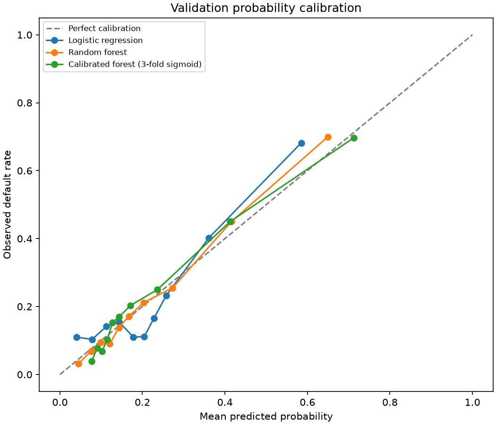

The highest-risk 10% of test accounts concentrates more observed defaults than the random-selection expectation of 132.7. Open Decision lab to adjust capacity and inspect incremental coverage.
An auditable research workflow
Stage
Evidence
Scope
Data
Official workbook; raw values retained
30,000 historical records
Development
Baselines, calibration and cross-validation
18,000 train / 6,000 validation
Evaluation
Recorded protocol and held-out split
6,000 test; already scored
Decision analysis
Capacity, assumed costs and group diagnostics
Exploratory; no profit claim
Explore the source data
Inspect distributions and coding before drawing conclusions.
Repayment Delay Status (PAY_0) Distribution
Delinquency in September 2005 shows the steepest gradient in default rate.
Fixed-model scores on already-evaluated test records
Predicted probabilities describe associations learned from historical data; they do not identify causal effects.
Missing cells
0
Interpreted by Pandas
Duplicate IDs
0
Customer identifiers
Negative bills
590
Preserved for audit
Examine the model evidence
Separate ranking performance, probability quality and subgroup behaviour.
Candidate model metrics on validation data
Model
ROC-AUC
Average precision
Brier score
Logistic regression
0.7259
0.5001
0.1452
Random forest (Final Chosen)
0.7899
0.5642
0.1337
Calibrated forest (3-fold sigmoid)
0.7867
0.5598
0.1343
Interactive Threshold on Held-Out Test Curve
Explore classification threshold0.50
Recall
34.7%
Defaults identified
False positive rate
5.1%
Non-defaults flagged
Precision
66.0%
Flagged defaults share
Validation Probability Calibration

Calibration did not improve the overall Brier score in this candidate comparison. Ranking quality and probability reliability are distinct properties.
Training Impurity Feature Importance
Training-only three-fold forest cross-validation
Fold
ROC-AUC
Average precision
Brier
Fold 1
0.7875
0.5642
0.1341
Fold 2
0.7802
0.5521
0.1350
Fold 3
0.7790
0.5498
0.1352
Final Model Demographic Group Diagnostics
Sex Code
Accounts
Defaults
Recall
FPR
Flagged Share
1 (Male)
2,402
561
34.0%
5.5%
12.2%
2 (Female)
3,598
766
35.2%
4.8%
11.3%
Excluding demographic predictors (SEX, EDUCATION, MARRIAGE) from final model input preserves legal compliance.
Turn risk scores into questions
Explore review workload and explicit assumptions without claiming intervention benefits.
Accounts available for review (%)10%
Review slots
600
10% of 6,000 test cases
Defaults captured
415
Historical outcomes
Default coverage
31.3%
Share of 1,327 defaults
Review precision
69.2%
Rate in selected queue
Random-selection expectation: 132.7 defaults. Historical concentration lift: 3.13×; this is not a causal improvement.
What do the next 300 reviews add?
Asymmetric Error Cost Sensitivity
Total Hypothetical Cost Units
4,567
Assumes FP = 1 unit, FN = 5 units
Expected Loss Arithmetic
Illustrative Expected Loss (NTD)
NT$ 2,250.00
EL = PD × LGD × EAD
Prediction simulator
Explore the fixed historical model with synthetic inputs. This is not a lending decision.
Inputs default to training-set medians. Submitting calculates estimated probability using the predetermined 20-feature standardizer and model weights.